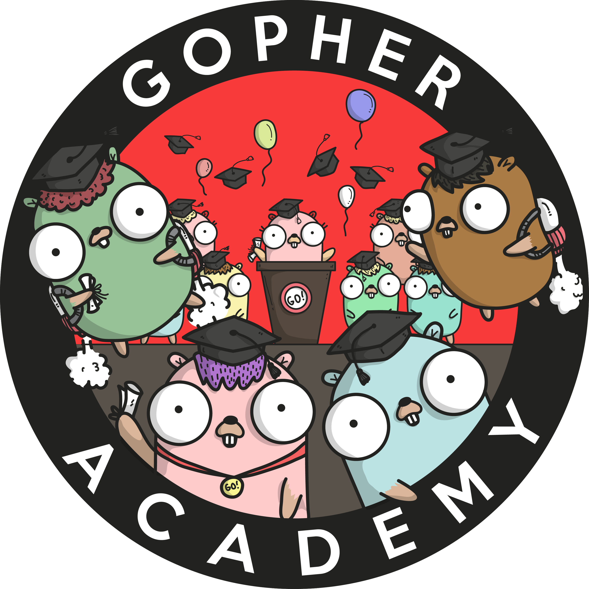
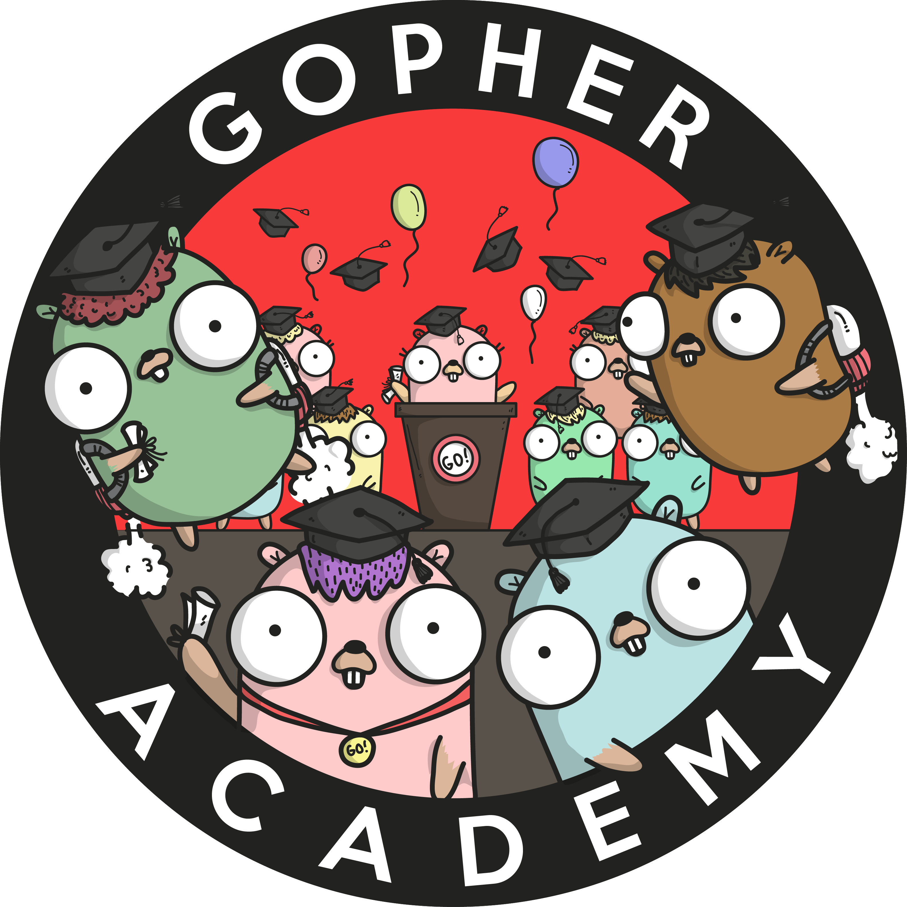

Featured Projects
Most of these projects are hosted on Heroku, so it may take 30 seconds to load the application.Fetcherapp.net v1
Fetcherapp does as the name implies, fetches data from Youtube's API notifying users if a streamers is currently live and updates streamers status in real time. For This app, I used NodeJS & Express for the backend. Node controls the requests to Youtube's API to ensure control over the amount of requests as well as hiding my own API key. This project was incredibly fun and gave me an idea of what my next project would be.
Project: Fetcherapp.net v2
Latest Project
The goal of this project was to make the UI a little more user friendly and minimize the app footprint in comparison to v1. In v1, I used redux which although a wonderful tool, wasnt really necessary for this application. Everything in this app could've used in local state and make for a smaller footprint. Also, the UI doesnt need to change to view a video (as it did in v1). All the data should be viewed on a single page for a better UI. Doing all of this, I managed to reduce the file size by about 100kb, and make for a much more enjoyable UX. Also, I've recently been very fascinated by the GO language, so I recreated the backend in Golang. Go is incredibly fast.

Project: A Reddit Clone V3
The goal for this project was to mimick Reddits behavior as well as UI. I can only to guess what Reddit uses stack-wise. I figured GraphQL would be great as I can prevent the user from being served the comments on page load (as it is unnecessary). So I used GraphQL on the backend as well as Apollo Client on the front-end. Apollo Client was a massive headache for me to learn, however I pulled through and am very comfortable using it (and enjoy it). This app also uses JWT's as well as Oauth for authentication. Yes, passwords are encrypted and stored in mongodb. Using Apollo Client, GraphQL, and JWTS for the first time was incredibly difficult but I managed to pull through. All in all, this app made me a far better developer and was/is incredibly fun to make. I do intend on implementing new features in the future.

Project: Live Chat
SocketIO is an incredibly powerful tool. Allowing multiple users to connect with eachother. I created this app because I feel like its important for a Developer to be able to create software that allow users to communicate.
Project: Buiness Mock-Up Page
I decided to use a new Front-End framework called 'MaterializeCSS'. I enjoy the modern style it consists of, as well as it being more mobile/touch friendly. The framework's documentation is pretty straightforward and a joy to use. The main point of this project was to just have another Front-End framework in my arsenal since I found only using Bootstrap to get pretty stale. The Make Appointment button in the navbar is fully functional and actually posts the data to mongoDB. A lot more can be added to this project but I just wanted to show how quickly I can grasp new technologies and implement them into my own projects.
About me
Alow me to introduce myself...
I am a 'self taught' developer from a small town called Navarre. I've been developing for around a year. From taking Udacity's Front End Dev program to making my own projects. My current focus is using React-Redux as I enjoy and find it simple yet powerful. I have used both Windows 10 and MacOS as development machines and have no issues with either.
Over the past year my main focus is to 'master' Javascript. Although I still have a long way to go... I have come very far. I frequent codewars as well as make simple tools for myself in JS for myself and for others (you can find some on my github). After feeling comfortable with JS I took Stephen Grider's React-Redux course and was amazed at how much easier it made programming! Although my main focus has been Javascript I also have delved deeply into html5/css3 and learning responsive design (Flexbox & CSS Grid). This can be viewed in my Fetcherapp project. I made the app usuable for all enviroments.
Now that I have become proficient at React-Redux. I am now meddling with some back-end aspects such as mongoDB as well as some authentication methods. I've currently deployed a Forum app that does all these things. But am still hungry to learn more of the back-end.
I currently work as an Independent Web Developer. My software is free and available for use by anybody. I spend anywhere from around 6 to 12 hours a day on Web Development (no im not exaggerating). I really do enjoy Web Development, being constantly challenged every single day is the best part. Getting stuck on a problem for hours and attempting to solve it on your own is frustrating yet gratifying once you've fixed it.
Current Stack/Skills
HTML, CSS, JavaScript, JQuery, AJAX, React, Redux, NodeJS